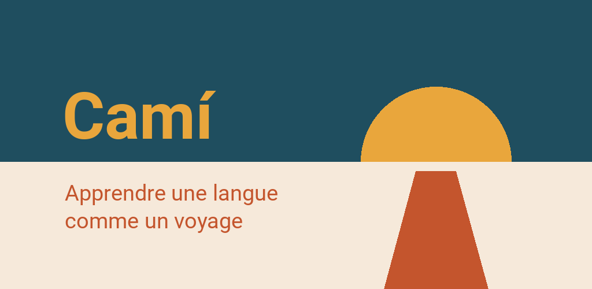

Politique de confidentialité
Camí · Mise à jour: 5 octobre 2026
Ceci est une traduction. En cas de doute, la version allemande fait foi.
En bref
Camí ne collecte rien sur toi. Il n'y a ni compte, ni publicité, ni statistiques d'utilisation. Ta progression reste sur ton appareil. Pour les exercices de prononciation, l'app peut utiliser le micro — l'enregistrement est analysé sur l'appareil et ne le quitte pas. Camí ne va sur Internet que pour trois choses, et c'est toi qui les déclenches toutes les trois : quand tu télécharges le paquet vocal pour les exercices de prononciation, quand tu participes au classement et quand tu nous envoies quelque chose avec « Signaler quelque chose ». Pour savoir s'il existe une mise à jour, Camí interroge l'app Play Store de ton téléphone. À part cela, l'app ne récupère rien.
Responsable du traitement
Finn Cardona SantaféPfaffenstraße 22
23552 Lübeck
Allemagne
E-mail : appentwicklung@mein.gmx
Sur ton appareil
Ce qui est enregistré
Ta progression, tes objectifs et les réglages sont enregistrés dans la mémoire de l'app sur ton appareil. Cela comprend par exemple : les leçons terminées, le jour où tu as achevé une étape, les récompenses obtenues, les boîtes de tes fiches de vocabulaire, les objectifs du jour et de la semaine, les points accumulés, ta série, le résultat du test de niveau, les langues choisies sous « Je parle » et « J'apprends », ainsi que les réglages d'affichage. Si tu participes au classement, ton numéro aléatoire avec sa clé (comme un mot de passe) et la dernière liste récupérée s'y ajoutent (voir « Classement »).
Aucun nom, aucune adresse e-mail, aucun identifiant d'appareil et aucune localisation ne sont collectés. L'enregistrement sur ton appareil est strictement nécessaire au fonctionnement de l'app ; il ne demande pas de consentement (§ 25, al. 2, n° 2 de la loi allemande TDDDG).
Pendant la lecture à voix haute
Quand tu fais lire un mot ou une phrase à voix haute, Camí transmet le texte à la synthèse vocale de ton appareil et n'y choisit que des voix indiquées comme hors ligne. Quelle synthèse vocale ton appareil utilise et ce qu'elle fait des textes, c'est son fabricant qui le décide (par exemple Google ou Samsung) ; ses conditions s'appliquent.
Quand tu parles
Dans les exercices de prononciation, le micro écoute tant que tu parles. La reconnaissance a lieu uniquement sur l'appareil — l'enregistrement est analysé aussitôt, enregistré nulle part et jamais envoyé. Pour que tu puisses l'écouter, ton dernier enregistrement reste en mémoire vive jusqu'à ce que tu parles à nouveau ou quittes l'exercice. L'écoute utilise le paquet vocal (Vosk) que tu télécharges auparavant (voir « Paquet vocal pour les exercices de prononciation ») ; il reste ensuite sur ton appareil et fonctionne sans réseau.
Avant de demander l'accès au micro, Camí te pose la question, et tu peux refuser. Tu peux aussi désactiver plus tard l'écoute pour chaque langue, ou désactiver les exercices de prononciation temporairement ou définitivement (Réglages → Prononciation). Le cours reste complet dans tous les cas : sans écoute, tu répètes les phrases sans que rien ne soit vérifié. Là où Camí pourrait écouter, tu obtiens alors 2 points (XP) de moins par exercice de prononciation — cela ne concerne que les points dans l'app et dans le classement, pas le cours.
Sauvegarde
Android peut inclure les données des apps installées dans la sauvegarde de l'appareil sur ton compte Google. Que cela se fasse ou non dépend d'un réglage de ton téléphone, pas de l'app ; la sauvegarde est soumise aux règles de confidentialité de Google.
Indépendamment de cela, tu peux exporter toi-même ta progression dans un fichier (Réglages → Niveau → Exporter la progression) et le ranger où tu veux. Ce qu'il advient de ce fichier, toi seul le décides. Si tu participes au classement, ton numéro aléatoire et sa clé s'y trouvent aussi — qui transmet le fichier transmet sa place au classement.
Effacer
Dans l'app : Réglages → Niveau → Remettre à zéro, au choix pour une seule langue. Désinstaller l'app efface toutes ses données sur l'appareil ; une sauvegarde de l'appareil ou un fichier exporté n'est pas concerné. Ton entrée au classement est effacée par l'interrupteur qui désactive le classement ; si tu désinstalles avant, ton entrée expire au bout de 60 jours.
Connexions à Internet
Camí n'établit une connexion que si tu la déclenches. Les cours, les images et les cartes sont inclus dans l'app ; tes enregistrements et ta progression ne quittent jamais l'appareil. Voici aujourd'hui toutes les connexions :
Paquet vocal pour les exercices de prononciation
Quand : quand tu actives l'écoute dans un exercice de prononciation ou dans les réglages et que le paquet vocal de cette langue n'est pas encore sur ton appareil — une fois par langue ; l'app indique la taille avant (actuellement environ 40 à 50 Mo).
Ce qui est transmis : les données de connexion habituelles d'un téléchargement — l'adresse du fichier, ton adresse IP et un identifiant du logiciel utilisé. Rien sur toi, ta progression ou tes enregistrements.
Vers qui : vers alphacephei.com, le serveur d'Alpha Cephei Inc., qui publie le logiciel de reconnaissance Vosk ; le serveur se trouve actuellement en Allemagne. Ton adresse IP y est reçue, pas chez nous — nous ne la recevons jamais.
Base légale : le téléchargement a lieu à ta demande, pour que l'exercice fasse ce que tu as activé (art. 6, par. 1, point b) du RGPD).
Désactiver : si tu ne télécharges pas le paquet, cette connexion n'existe pas. Tu peux supprimer un paquet téléchargé de ton appareil sous Réglages → Prononciation.
Classement (facultatif)
Sans lui, il ne te manque rien. Il reste désactivé tant que tu ne l'actives pas et ne donnes pas ton accord ; tu peux y participer à partir de 16 ans. Notre serveur reçoit alors :
- ton pseudo,
- un numéro aléatoire tiré par ton appareil lui-même, avec une clé grâce à laquelle le serveur te reconnaît (il n'en enregistre que l'empreinte),
- tes points par exercice avec le jour,
- et, comme pour toute connexion, ton adresse IP.
Dans quel but : pour que tu figures dans un classement avec d'autres. Tous les participants voient les pseudos et les points — ne prends donc pas ton vrai nom. Nous retirons un pseudo offensant ; tes points restent. Personne d'autre ne reçoit les données, et rien n'est analysé.
Vers qui : vers notre propre serveur. Nous louons la machine chez IONOS SE (centre de données en Espagne, donc dans l'UE) ; IONOS est notre sous-traitant et suit nos instructions.
La base légale est ton consentement (art. 6, par. 1, point a) du RGPD). Tu le retires en désactivant le classement ; ce qui a eu lieu jusque-là reste licite (art. 7, par. 3 du RGPD).
Combien de temps : si tu désactives le classement, ton entrée est effacée — si tu es hors ligne à ce moment-là, dès que tu es de nouveau en ligne. Si rien ne vient de toi pendant 60 jours, elle est effacée d'elle-même. Une entrée effacée reste au plus 14 jours dans les copies de sauvegarde du serveur.
Signaler quelque chose
Avec « Signaler quelque chose », en haut de l'écran, tu nous envoies une erreur ou un souhait. Rien ne part avant que tu touches « Envoyer », et seulement ce que la fenêtre indique : ton texte et le motif ; pour un exercice, sa place dans le cours et la solution ; ta langue apprise et ta langue d'explication, la version de l'app et le système — et, si tu coches la case, une capture d'écran. S'y ajoute, comme pour toute connexion, ton adresse IP ; elle figure dans le journal du serveur web, pas dans le signalement lui-même.
Le signalement ne porte ni nom ni identifiant. C'est pourquoi nous ne pouvons pas te répondre, ni le retrouver plus tard — n'y écris donc rien de personnel.
Vers qui : vers le même serveur que le classement (IONOS SE, voir ci-dessus).
La base légale est notre intérêt légitime à corriger les erreurs que tu nous envoies toi-même (art. 6, par. 1, point f) du RGPD). Combien de temps : sur notre serveur jusqu'à ce que nous l'ayons lu, 90 jours au plus, et 14 jours de plus dans les copies de sauvegarde.
Le journal du serveur web
Pour le classement et « Signaler quelque chose », le serveur web placé devant notre service inscrit chaque requête avec ton adresse IP dans son journal. Cela sert uniquement à la sécurité de l'exploitation — par exemple pour détecter des attaques — et relève de notre intérêt légitime (art. 6, par. 1, point f) du RGPD). Le journal est effacé au bout de 14 jours. Le service lui-même n'enregistre aucune adresse IP.
Avis de mise à jour via le Play Store
Pour savoir s'il existe une nouvelle version de Camí, l'app interroge l'app Play Store de ton téléphone (les « mises à jour dans l'application » de Google). Camí n'établit lui-même aucune connexion pour cela et ne transmet rien sur toi au Play Store. Le Play Store envoie à Google ses propres informations, par exemple des données sur l'appareil et la version de l'app ; les conditions d'utilisation de Google Play et la politique de confidentialité de Google s'y appliquent.
Au-delà, il n'y a aucune transmission à des tiers, aucun réseau publicitaire et aucun service d'analyse.
Tes droits
Ce qui se trouve sur ton appareil t'appartient et peut y être consulté et effacé à tout moment (voir « Ce qui est enregistré » et « Effacer »). Pour les données sur notre serveur, tu as droit à
- l'accès (art. 15 du RGPD) et l'effacement (art. 17) — pour le classement, l'app te donne les deux elle-même : Réglages → « Ce qui est enregistré sur toi » et l'interrupteur du classement,
- la rectification (art. 16), la limitation (art. 18) et la portabilité (art. 20),
- l'opposition à un traitement fondé sur notre intérêt légitime (art. 21),
- le retrait de ton consentement pour l'avenir (art. 7, par. 3) — pour le classement : le désactiver.
Pour cela, écris-nous à l'adresse indiquée plus haut. Nous ne pouvons toutefois pas t'attribuer un signalement envoyé avec « Signaler quelque chose », car il ne porte aucun identifiant (art. 11 du RGPD).
Tu as en outre le droit d'introduire une réclamation auprès d'une autorité de contrôle de la protection des données (art. 77 du RGPD), par exemple dans ton pays ou à ton lieu de résidence. L'autorité compétente pour nous est l'Unabhängiges Landeszentrum für Datenschutz Schleswig-Holstein (l'autorité de protection des données du Land de Schleswig-Holstein), Holstenstraße 98, 24103 Kiel, Allemagne, www.datenschutzzentrum.de.
Modifications
Si quelque chose change dans le traitement des données, cette page est mise à jour et la date en haut actualisée.